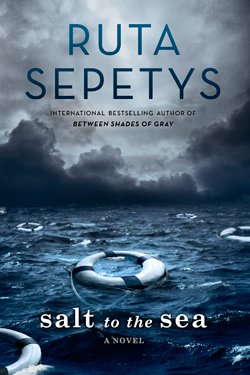
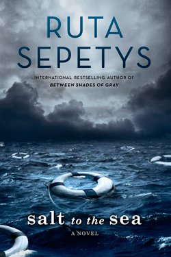

A gothic masterpiece of tempestuous passions and dark secrets, Charlotte Brontë's Jane Eyre is edited with an introduction and notes by Stevie Davis in Penguin Classics.
Charlotte Brontë tells the story of orphaned Jane Eyre, who grows up in the home of her heartless aunt, enduring loneliness and cruelty. This troubled childhood strengthens Jane's natural independence and spirit - which prove necessary when she finds employment as a governess to the young ward of Byronic, brooding Mr Rochester. As her feelings for Rochester develop, Jane gradually uncovers Thornfield Hall's terrible secret, forcing her to make a choice. Should she stay with Rochester and live with the consequences, or follow her convictions - even if it means leaving the man she loves? A novel of intense power and intrigue, Jane Eyre dazzled readers with its passionate depiction of a woman's search for equality and freedom.
At twenty-two, Cheryl Strayed thought she had lost everything. In the wake of her mother’s death, her family scattered and her own marriage was soon destroyed. Four years later, with nothing more to lose, she made the most impulsive decision of her life. With no experience or training, driven only by blind will, she would hike more than a thousand miles of the Pacific Crest Trail from the Mojave Desert through California and Oregon to Washington State — and she would do it alone.
Told with suspense and style, sparkling with warmth and humor, Wild powerfully captures the terrors and pleasures of one young woman forging ahead against all odds on a journey that maddened, strengthened, and ultimately healed her.
The unforgettable novel of a childhood in a sleepy Southern town and the crisis of conscience that rocked it, To Kill A Mockingbird became both an instant bestseller and a critical success when it was first published in 1960. It went on to win the Pulitzer Prize in 1961 and was later made into an Academy Award-winning film, also a classic.
Compassionate, dramatic, and deeply moving, To Kill A Mockingbird takes readers to the roots of human behavior - to innocence and experience, kindness and cruelty, love and hatred, humor and pathos. Now with over 18 million copies in print and translated into forty languages, this regional story by a young Alabama woman claims universal appeal. Harper Lee always considered her book to be a simple love story. Today it is regarded as a masterpiece of American literature.
When Elizabeth Bennet first meets eligible bachelor Fitzwilliam Darcy, she thinks him arrogant and conceited, while he struggles to remain indifferent to her good looks and lively mind. When she later discovers that Darcy has involved himself in the troubled relationship between his friend Bingley and her beloved sister Jane, she is determined to dislike him more than ever. In the sparkling comedy of manners that follows, Jane Austen shows the folly of judging by first impressions and superbly evokes the friendships, gossip and snobberies of provincial middle-class life.
Winter, 1945. Four teenagers. Four secrets.
Each one born of a different homeland; each one hunted, and haunted, by tragedy, lies…and war.
As thousands of desperate refugees flock to the coast in the midst of a Soviet advance, four paths converge, vying for passage aboard the Wilhelm Gustloff, a ship that promises safety and freedom.
Yet not all promises can be kept.
Inspired by the single greatest tragedy in maritime history, bestselling and award-winning author Ruta Sepetys (Between Shades of Gray) lifts the veil on a shockingly little-known casualty of World War II. An illuminating and life-affirming tale of heart and hope.
J.K. Rowling's screenwriting debut is captured in this exciting hardcover edition of the Fantastic Beasts and Where to Find Them screenplay.
When Magizoologist Newt Scamander arrives in New York, he intends his stay to be just a brief stopover. However, when his magical case is misplaced and some of Newt's fantastic beasts escape, it spells trouble for everyone…
Fantastic Beasts and Where to Find Them marks the screenwriting debut of J.K. Rowling, author of the beloved and internationally bestselling Harry Potter books. Featuring a cast of remarkable characters, this is epic, adventure-packed storytelling at its very best.
Whether an existing fan or new to the wizarding world, this is a perfect addition to any reader's bookshelf.
In the hallowed halls of Oxford’s Merlin College, the most talented—and highest born—sons of the Kingdom of Britain are taught the intricacies of magickal theory. But what dazzles can also destroy, as Gray Marshall is about to discover…
Gray’s deep talent for magick has won him a place at Merlin College. But when he accompanies four fellow students on a mysterious midnight errand that ends in disaster and death, he is sent away in disgrace—and without a trace of his power. He must spend the summer under the watchful eye of his domineering professor, Appius Callender, working in the gardens of Callender’s country estate and hoping to recover his abilities. And it is there, toiling away on a summer afternoon, that he meets the professor’s daughter.
Even though she has no talent of her own, Sophie Callender longs to be educated in the lore of magick. Her father has kept her isolated at the estate and forbidden her interest; everyone knows that teaching arcane magickal theory to women is the height of impropriety. But against her father’s wishes, Sophie has studied his ancient volumes on the subject. And in the tall, stammering, yet oddly charming Gray, she finally finds someone who encourages her interest and awakens new ideas and feelings.
Sophie and Gray’s meeting touches off a series of events that begins to unravel secrets about each of them. And after the king’s closest advisor pays the professor a closed-door visit, they begin to wonder if what Gray witnessed in Oxford might be even more sinister than it seemed. They are determined to find out, no matter the cost…
The Great Recession has shuffled Clay Jannon away from life as a San Francisco web-design drone and into the aisles of Mr. Penumbra’s 24-Hour Bookstore. But after a few days on the job, Clay discovers that the store is more curious than either its name or its gnomic owner might suggest. The bookstore’s secrets extend far beyond its walls.
In A Game of Thrones, George R.R. Martin has created a genuine masterpiece, bringing together the best the genre has to offer. Mystery, intrigue, romance, and adventure fill the pages of the first volume in an epic series sure to delight fantansy fans everywhere.
In a land where summers can last decades and winters a lifetime, trouble is brewing. The cold is returning, and in the frozen wastes of the north of Winterfell, sinister and supernatural forces are massing beyond the kingdom's protective Wall. At the center of the conflict lie the Starks of Winterfell, a family as harsh and unyielding as the land they were born to. Sweeping from a land of brutal cold to a distant summertime kingdom of epicurean plenty, here is a tale of lords and ladies, soldiers and sorcerers, assassins and bastards, who come together in a time of grim omens. Amid plots and counterplots, tragedy and betrayal, victory and terror, the fate of the Starks, their allies, and their enemies hangs perilously in the balance, as each endeavors to win that deadliest of conflicts: the game of thrones.
The year 1984 has come and gone, but George Orwell's prophetic, nightmarish vision in 1949 of the world we were becoming is timelier than ever. 1984 is still the great modern classic of "negative utopia" -a startlingly original and haunting novel that creates an imaginary world that is completely convincing, from the first sentence to the last four words. No one can deny the novel's hold on the imaginations of whole generations, or the power of its admonitions -a power that seems to grow, not lessen, with the passage of time.
The circus arrives without warning. No announcements precede it, no paper notices plastered on lampposts and billboards. It is simply there, when yesterday it was not.
Within these nocturnal black-and-white striped tents awaits an utterly unique, a feast for the senses, where one can get lost in a maze of clouds, meander through a lush garden made of ice, stare in wonderment as the tattooed contortionist folds herself into a small glass box, and become deliciously tipsy from the scents of caramel and cinnamon that waft through the air.
Welcome to Le Cirque des Rêves.
Beyond the smoke and mirrors, however, a fierce competition is under way--a contest between two young illusionists, Celia and Marco, who have been trained since childhood to compete in a "game" to which they have been irrevocably bound by their mercurial masters. Unbeknownst to the players, this is a game in which only one can be left standing, and the circus is but the stage for a remarkable battle of imagination and will.
As the circus travels around the world, the feats of magic gain fantastical new heights with every stop. The game is well under way and the lives of all those involved--the eccentric circus owner, the elusive contortionist, the mystical fortune-teller, and a pair of red-headed twins born backstage among them--are swept up in a wake of spells and charms.
But when Celia discovers that Marco is her adversary, they begin to think of the game not as a competition but as a wonderful collaboration. With no knowledge of how the game must end, they innocently tumble headfirst into love. A deep, passionate, and magical love that makes the lights flicker and the room grow warm whenever they so much as brush hands.
Their masters still pull the strings, however, and this unforeseen occurrence forces them to intervene with dangerous consequences, leaving the lives of everyone from the performers to the patrons hanging in the balance.
Both playful and seductive, The Night Circus, Erin Morgenstern's spell-casting debut, is a mesmerizing love story for the ages.